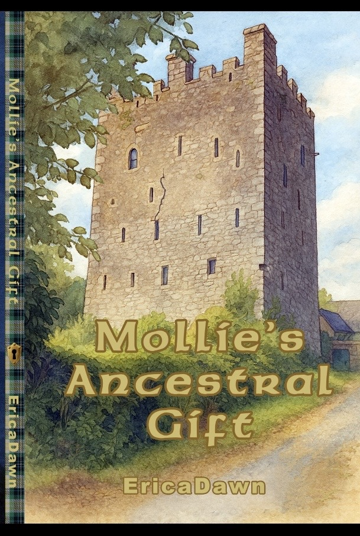

Mollie’s Ancestral Gift is a gentle folklore fantasy rooted in magical realism, serving as a love letter to heritage. Guided by Aunt Grace, Mollie discovers through whispered memories, ancestral echoes, and the quiet magic of a lakeside castle, that her family’s legacy lives within her. Destined to become Keeperess of family memories, she must honor the past while carrying its wisdom forward.

Mollie’s Ancestral Gift
Mollie’s Ancestral Gift is a gentle folklore fantasy rooted in magical realism, serving as a love letter to heritage. Guided by Aunt Grace, Mollie discovers through whispered memories, ancestral echoes, and the quiet magic of a lakeside castle, that her family’s legacy lives within her. Destined to become Keeperess of family memories, she must honor the past while carrying its wisdom forward.